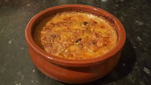

Tave Dheu

Description
Tave Dheu is a traditional Albanian dish, typically made with lamb, beef, or sometimes chicken or pork. The meat is marinated in a mix of olive oil, garlic, onions, and spices like paprika and bay leaves, creating a rich, flavorful base. It is then slow-cooked with vegetables like tomatoes, peppers, and potatoes, often in a clay pot, which enhances the dish's taste.
This hearty meal is usually served with crusty bread to soak up the savory sauce and can be paired with yogurt or a fresh salad. Tave Dheu is a symbol of Albanian hospitality, offering a comforting, flavorful experience perfect for family gatherings and special occasions.
Ingredients
- Lamb, beef, or chicken (depending on your preference)
- Olive oil
- Garlic (minced)
- Onions (chopped)
- Tomatoes (chopped or pureed)
- Bell peppers (chopped)
- Potatoes (sliced)
- Bay leaves
- Paprika
- Black pepper
- Salt
- White wine
- Yogurt
Steps
- Prepare the Meat:
- Cut the lamb, beef, or chicken into chunks.
- Marinate the meat in a mixture of olive oil, minced garlic, chopped onions, paprika, bay leaves, black pepper, and salt. Let it sit for about 30 minutes to absorb the flavors.
- Prepare the Vegetables:
- Slice the potatoes and chop the bell peppers and tomatoes.
- Layer the Ingredients:
- In a clay pot (or any oven-safe dish), layer the marinated meat, followed by the sliced potatoes, chopped bell peppers, and tomatoes.
- Add Wine and Olive Oil:
- Pour a little white wine (optional) over the ingredients and drizzle with extra olive oil for richness.
- Bake the Dish:
- Cover the clay pot with a lid or foil and bake at 180°C (350°F) for about 1.5 to 2 hours, or until the meat is tender and the flavors are well developed.
- Serve:
- Once cooked, remove from the oven and let it cool slightly before serving. It’s often paired with yogurt or a fresh salad.